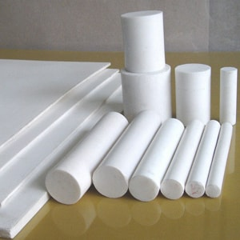
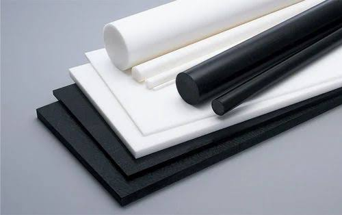
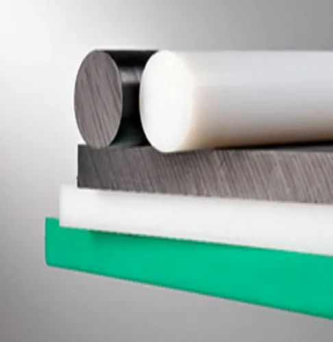
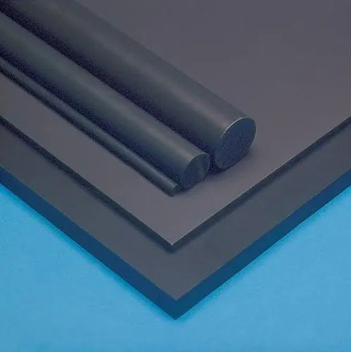
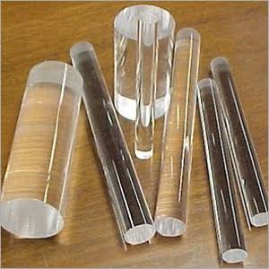
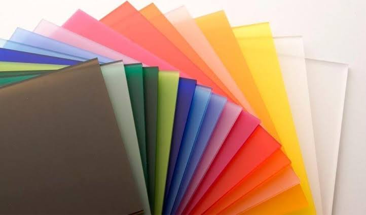
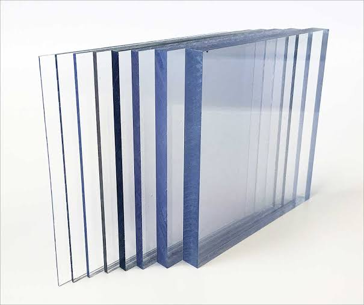
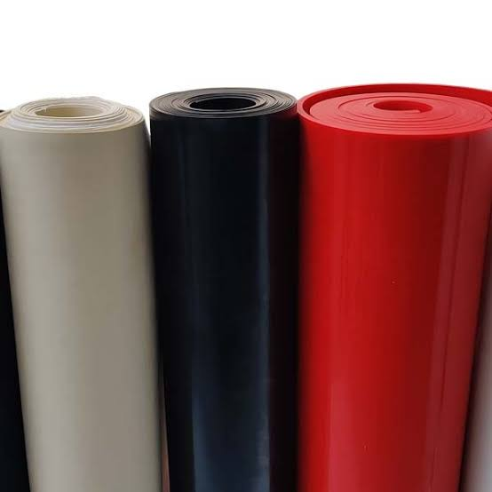
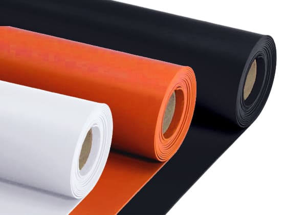

Nylon rods and sheets are commonly used engineering plastics known for their durability, low friction,
and versatility. They offer good mechanical properties, chemical resistance, and can be easily machined
into various shapes. Nylon is often used in applications such as gears, bearings, bushings, and
structural components due to its high strength-to-weight ratio. It's also used in industries like
automotive, aerospace, electronics, and consumer goods. If you're looking for specific details or have
questions about nylon rods and sheets, feel free to ask!

Teflon, also known as polytetrafluoroethylene (PTFE), is a synthetic fluoropolymer known for its
non-stick and high-temperature resistant properties. Teflon rods and sheets are commonly used in various
applications such as lining pipes, making gaskets, seals, and bearings due to their chemical resistance
and low friction characteristics.

Delrin, also known as Polyoxymethylene (POM), is a high-performance engineering plastic known for its
excellent combination of mechanical properties, low friction, and dimensional stability. Delrin rods and
sheets are commonly used in various applications such as gears, bearings, bushings, automotive parts,
and more, due to their durability and resistance to wear and chemicals. If you have specific questions
about Delrin rods and sheets, feel free to ask!

UHMW (Ultra High Molecular Weight Polyethylene) is a type of plastic known for its high strength, low
friction, and impact resistance. UHMW rods and sheets are commonly used in applications requiring
wear-resistant materials, such as conveyor guides, chute liners, and cutting boards.

PVC (Polyvinyl Chloride) rods and sheets. PVC is a type of plastic material commonly used for various
applications due to its durability and versatility. PVC rods are cylindrical bars made from PVC, while
PVC sheets are flat panels. They are often used in construction, signage, crafting, and other industries

Acrylic rods are cylindrical pieces made from acrylic plastic. They come in various diameters and
lengths, and they're known for their transparency, lightweight nature, and resistance to impact. Acrylic
rods have a wide range of applications, including use in crafts, displays, signage, lighting fixtures,
and even scientific equipment. They can be easily cut, shaped, and polished to suit specific needs. If
you have more specific questions about acrylic rods or their uses, feel free to ask!

Acrylic sheets are flat, rigid plastic panels made from acrylic material. They're highly transparent and
offer excellent optical clarity, making them a popular choice for applications where glass might be used
but weight and shatter resistance are important factors. Acrylic sheets are often used for windows,
skylights, signs, protective barriers, displays, and various DIY projects. They can be cut, drilled, and
shaped easily using common tools. If you have further questions about acrylic sheets or their
properties, feel free to ask!

polycarbonate sheets are often referred to as "unbreakable" because of their exceptional impact
resistance. They are much stronger than traditional glass and acrylic sheets, making them a popular
choice for applications where durability and safety are essential, such as in construction, security
glazing, and protective barriers. However, while they are highly resistant to breaking, it's important
to note that extreme force or improper handling can still lead to damage.

1. Rubber Sheet: Our standard rubber sheets are versatile and suitable for a wide range of applications. They offer excellent durability and resistance to abrasion, making them ideal for gaskets, seals, and various industrial uses.
2. Electric Rubber Sheet: Our electric rubber sheets are specially formulated to provide electrical insulation. They are designed to prevent the conduction of electricity and are often used in electrical equipment and applications to ensure safety and reliability.

3. Lining Rubber Sheet: Lining rubber sheets offer exceptional chemical resistance and are commonly used for lining surfaces that come into contact with corrosive or abrasive materials. They are often utilized in industrial settings, such as in chemical processing plants or mining operations, to protect equipment and surfaces from wear and damage.
4. Silicon Rubber Sheet: Silicone rubber sheets are known for their high temperature resistance and excellent flexibility across a wide temperature range. They are often used in applications where heat resistance and flexibility are crucial, such as in the food industry, medical devices, and electronics.